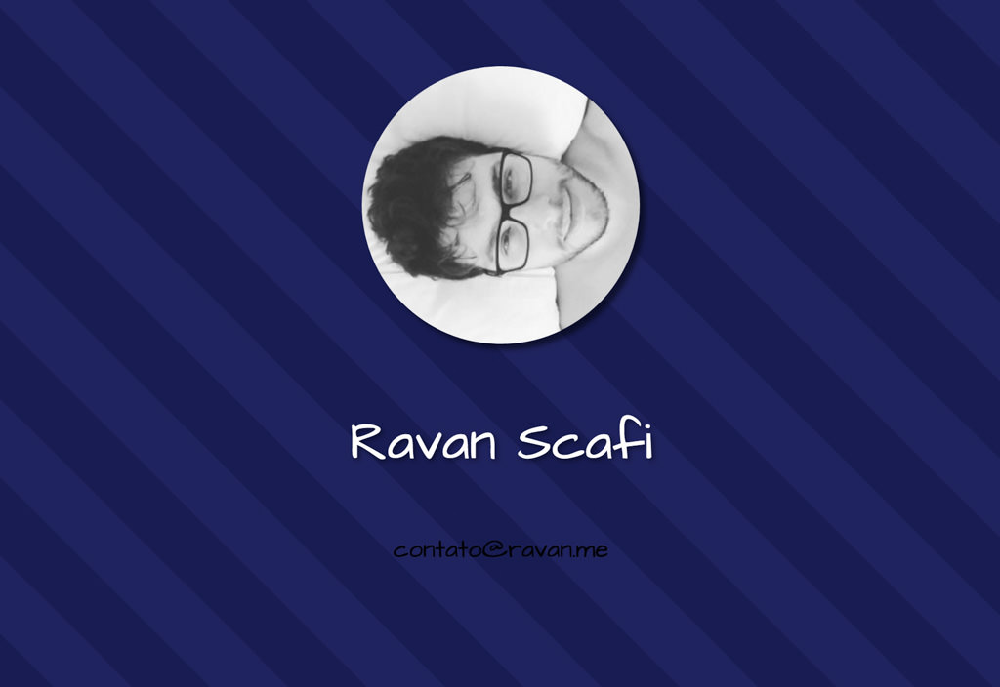

I've always wanted to create a blog and a personal website. The idea of blogging about my experience as a developer pursues me since I've started googling about HTML, many many years ago. All of the great developers I know give back to society the knowledge they've acquired. Besides doing open source projects, which is already a huge thing, they contribute to other community members in form of blog posts. By doing it, they help others to become and also stay as developers, that in turn start to contribute too. And I want to be a part of this cycle.
But, you know, as a good procrastinator, I've always found reasons not to start doing it. Procrastination itself deserves its own post, but this is not the point right now. Anyway, some of the excuses that I kept telling myself over the years for not starting it include:
Since I'm really capricious and want to build my own website, I've came up with an idea to address all of this excuses at once and beat procrastination: Letting my blog posts being about the very creation of this blog!
Fortunately, there are some motives that led me to finally starting it:
I need to improve my writing skills, both on my native language,Brazilian Portuguese, and English, perhaps even on Spanish, that I'm currently learning.
My Digital Ocean's credit from GitHub Student Developer Pack is expiring after a year (I didn't know about this limitation) and my awful "provisory" page (nothing is really provisory for procrastinators) with my picture and e-mail is going to limbo if I do nothing about it (see my shame above).
I want to stop using Sublime Text Editor in order to support Atom, so I need to interact more with it and learn about its packages and shortcuts.
I want to catch up with front-end again, since I've stopped working with it for at least a year, and, you know, it's JavaScript.
Last but not least, I really want to give back my knowledge to community. I'm digging into teaching other people my skills and I think that I'm really helping them, so this blog can be a PoC (Proof of Concept) to other projects in the future.

My old "provisory" website - at least I did the background with CSS
Incrementally create the blog, adding new features on each chapter.
Having a "chapter" switcher to visually keep track of the changes across chapters, something like Wayback Machine - Internet Archive. For this I guess that I'll have to store all assets versions, I'll think about it on chapter 2.
Using pull requests for each chapter, so that I can use smaller commits and a CI/CD tool.
After I reach a certain maturity on my blogging platform, perhaps I can write about other things, if I feel like doing it.
A mechanism that allows for a visitant to select a incorrect information (or even a misspelled word) and to open a Pull Request with patched files automagically. I saw a similar strategy for comments, using issues, on a static generated blog of a brazilian front-end developer, but I can't remember who right now. Until I implement this, I'll find who and learn how he did it.
SEO Optimizations and Google Analytics Integration. Since I'm doing this for the learning, why not to go out of my comfort zone and learn this too?
Sticking with GitHub Pages as long as possible, let's see how far I can go with it and my extraneous ideas.
Mobile first design.
Links testing in order to avoid broken references.
(ab)³ for the blog name (notice the A-B repetition on title) sounds like a cool name but in reality isn't.April 12, 2016 - by Ravan Scafi | View this project on GitHub
{kind=link}